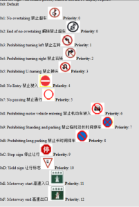
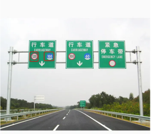
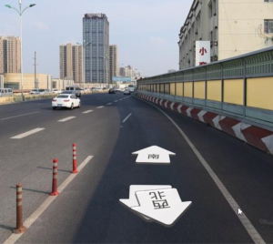
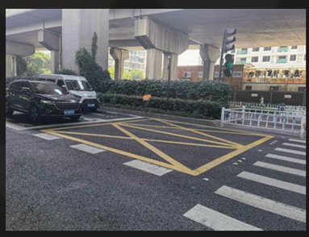
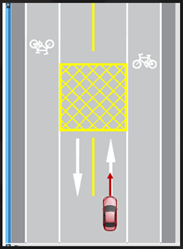

Question Collection about HD MAP & SD MAP
This page will collect all the questions raised by other teams,
|
Item |
Your Questions |
Expect Due date or Priority If you are in a hurry, please note the reason |
Our Answer |
|
1 |
LI Xiaotao (XC-AS/PJ-WIN-SYS2) a. Can high -speed ramps be represented? b. Is there a map inside the high -speed road service area? c. Is parking space provided in the high -speed road service area? d. Without map data and parking space information in the service area, can you think that these areas will not be defined by HD maps as highway? Which lane can E.HD map can provide information about car accidents? Can the F.SD map provide an unexpected road logo?As shown in the figure below;  |
|
a. The ramp of the highway connection service area will be provided b. No map data in the service area c. No parking space information in the service area d. The service area will not be defined as highway e. HD map cannot provide dynamic information such as accidents |
|
2 |
user-aa4b7 Question: a. How to express the rods in the map?If the base is a cement pier, is the virtual location center or edge? b. Is the Boundingbox on the ground arrow just a few outside dots, or the BOX is larger than the arrow? c. Which form of the speed limit sign of the ground is provided in? d. Do traffic lights include controlling pedestrians/ride bicycles?If it includes, will a sub -category information be given? e. In addition to the location of the traffic sign to the ground, is there any category information?How to define the category?For example, the category is defined according to the national standard. f. There are multiple signs on a large sign. How can the map give?What is given is the location of the brand, or is the location of each small traffic sign? |
|
a. The rods will be projected on the ground and given in the form of a point.If there is a shrub under the pole, the low point of the rod is on the shoulders of the road, not on the plane of the ground.The low point is the center point. b. Boudingbox on the ground arrow is the outer point of the arrow. c. d. Traffic lights do not include non -motorized vehicles and pedestrians e. Traffic signs have Signype categories.Specific category is provided separately f. There are similar signs such as speed limit on a large brand, and the map is not provided.The map only provides large brands and positions.For example, the logo in the red box in the figure below does not  |
|
3 |
|
|
|
|
4 |
Highway or Expressway ramps enter the entrance, how does the map maker express? RB ConCERN Standardize the vehicle to avoid the boundary cone pillar set in the lane settings in advance  |
|
The ramp road type will be provided, and the entry of the lane will also be characterized.At the same time, the lane will be provided |
|
5. |
ZHENG Zhengxing (XC-AS/PJ-WIN-ASW1) ,
|
|
|
|
6 |
Virtual lane |
|
There is no actual label on the road, there is no actual label position in the intersection, it will provide a lane line boundary, and can inform it that it is Virtual. The central line of the virtual lane in the intersection will also be provided |
|
7 |
Whether the ground arrow contains information such as prohibiting U -turn |
|
Marking information of the map is not prohibited from U -turn on the ground |
|
8 |
Toll station front and back lane line |
|
There will be virtual lane lines before and after toll stations. No separate ETC lane expression |
|
9 |
No -stop area   |
|
According to the feedback of the chart, this type is prohibited can be provided |
|
10 |
Tidal lane |
|
You can provide a logo, whether the lane can be used within a certain time rules, and map feedback can be provided |
|
11 |
Variable lane |
|
Can provide this type |
|
12 |
Enter a certain rule -behavior area, such as ENTER_TOLL_GATE, is the sending distance of a lane -level distance or a road -level distance? |
|
Road -level distance |
|
13 |
Does the sample point of the map business correspond to the point of the Curvature, on the same cross -section? |
|
The sampling point of the map business Boundary will not correspond to the point of the Curvature, nor will it be no connection between the two on the same cross section. |
|
14 |
In the urban road, how many meters in front of the crossroads will marked the direction of this road (left, straight, right turn, etc.). Will the map send this direction in time?from ZHU Chuanqi (XC-AS/PJ-WIN-SYS2) |
|
Static information such as the direction of the lane, or the arrow information of the ground will send the 2km map information on the planning path to send the planning path |